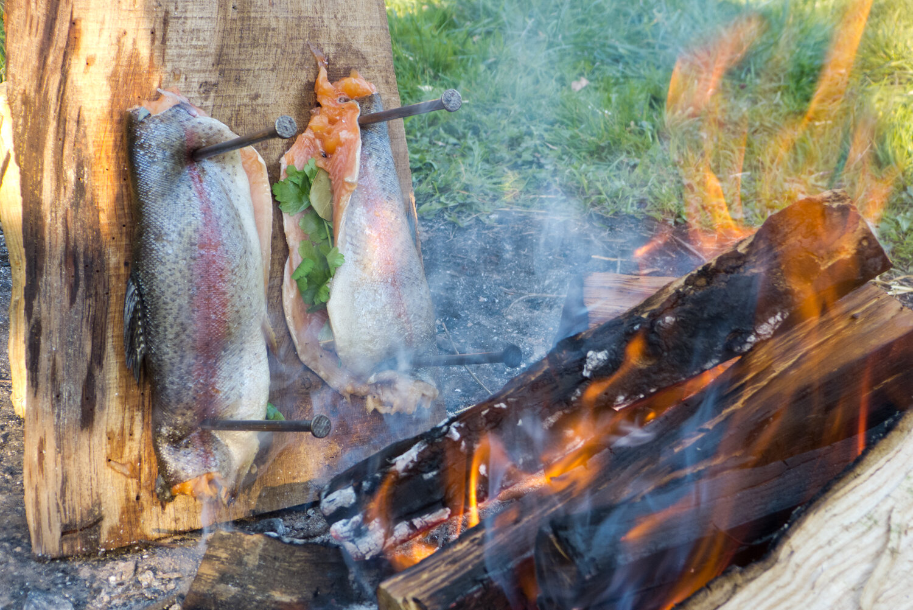

Cómo preparar: Trucha al tablón

Introducción
Castiga a una trucha crucificándola y, de paso, prepara un buen festín.
Esta receta explica como preparar una trucha "al tablón", que no es más que clavar al pobre pez en una tabla de madera.
Ingredientes
- Una trucha (a ser posible culpable de algún crimen)
- Tomillo
- Hojas de saúco molidas
- Rodajas de limón
- Sal
- Dos chalotas picadas
Preparación
- Cubrir la carne de cada lomo de la trucha con la mezcla del tomillo, hojas de saúco, rodajas de limón y las chalotas picadas.
- Espolvorear la sal encima.
- Clavar los lomos de la trucha en un tablón con la piel hacia fuera.
- Colocar los tablones en posición vertical junto al fuego y dejar 30 minutos.
- Girar el tablón de arriba a abajo y dejar otros 30 minutos.